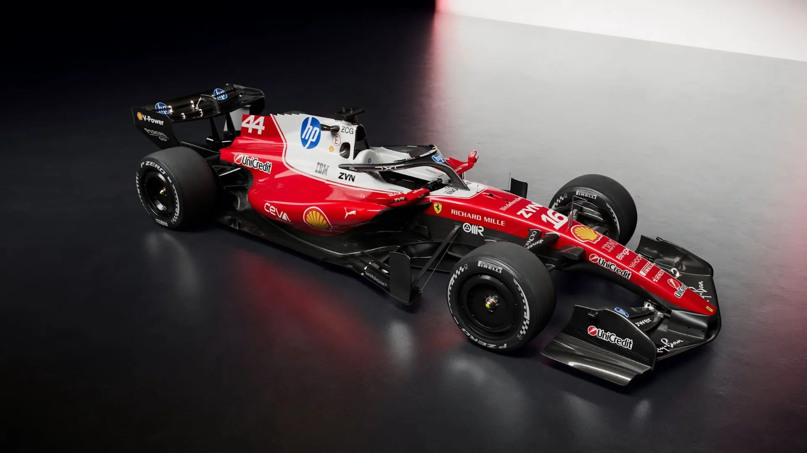
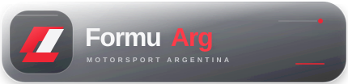

FERRARI · ROSSO CORSA · 16
PRÓXIMA FECHA · TEMPORADA 2026
Gran Premio
de Estados Unidos.
Calendario oficial · horarios en tu zona
RONDA 01FORMATO PENDIENTE


Calendario oficial · horarios en tu zona
El calendario se carga desde data/calendario.json. Los horarios oficiales están en UTC y se convierten a la zona seleccionada; las transmisiones se indicarán cuando haya una fuente confirmada.
Próximas sesiones, convertidas a tu zona horaria.
Explorá las fechas, sedes y formatos de cada categoría. Seleccioná un circuito para ver sus datos.
Clasificación del campeonato de Fórmula 1.
| POS. | PILOTO | EQUIPO | PTS |
|---|
Configurá cómo seguís cada fin de semana.
Las fechas y horas de la agenda se ajustan a la zona elegida.
Elegí qué sesiones querés seguir y el tiempo de anticipación.
Los filtros elegidos se conservan en este dispositivo.
Usá el botón de calendario en una sesión para descargar un archivo .ics con su horario y categoría.
Los cambios oficiales, canales de TV, widgets nativos de celular y notificaciones con la app cerrada requieren fuentes de datos o soporte adicional. La interfaz deja explícito cuándo esa información está pendiente.